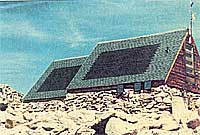
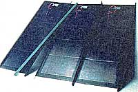
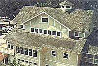
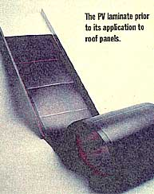

Energy and Environment
How do we know solar is here to stay? Amoco is producing PVs.
"Technology that grew up in space can finally be brought down to earth."
-Frederico Peña U.S. Secretary of Energy
As we get closer to fully employing the simple, abundant, and absolutely free energy from the star at the center of our planetary system, we get closer to becoming a civilized society. A leap to solar power would solve about a hundred earthly problems. In his recent speech to the United Nations Special Session on Environment and Development, President Clinton made his best point on the topic of solar energy by quoting John Muir: "When we try to pick anything out by itself, we find it hitched to everything else in the universe." PV (photovoltaic) energy produces no air pollution, hazardous waste, or noise, and requires no transportable fuels. Politically, it offers our nation freedom from being at the mercy of the Middle East and from the necessity of exploiting resources in our own nation's pristine natural areas, such as Utah. The only catch, of course, continues to be the cost.
As we get closer to fully employing the energy of the sun, we get closer to being a civilized society...unchained to fuel from the Persian Gulf.
Solar cells or panels have been used in space for many decades to power most satellites and shuttles, but the private sector has had very little access to this technology because of the high cost of materials (crystalline silicon technology) that convert sunlight into electricity. The latest quest in the development of solar technology has been to bring that cost down. One of the most successful ways to emerge recently is the use of thin films of silicon. The thinness allows easier absorption of light and can be coupled with less expensive materials. Several promising new products that use thin film are on the market. As Germany and Japan manufacture and market more solar technology, the U.S. is pumping money into R & D and sponsoring government initiatives to try to keep up with the competition. Some government attention is better than none, but other countries have provided much stronger incentives for manufacturers and for consumers. The most encouraging evidence that solar is here to stay, and will become more marketable and more cost effective, is that existing manufacturers of PV systems are expanding production and building new plants. Despite mergers of American and foreign companies and joint ventures with German and Japanese companies, America still has the competitive edge on developing, manufacturing, and marketing in this high tech industry. But will we keep it? With an entrenched electric utilities grid, will solar energy be only for export or will it be made available to us in our homes and businesses?
Someday we'll see photos of giant upright metal panels on rooftops and beside buildings and we'll be amused at our early clunky efforts to capture sunlight and convert it into electricity. We have entered the age of the polymer. It's in everything from our airplanes to our sweatshirts, and now it's in some PV cells. Rather than adding-on solar panels, the trend is toward incorporating thin-film solar technology directly into the fabrication of building materials including roofs, shingles, windows, and siding. Thin-film photovoltaic modules are produced by applying extremely thin layers of light-sensitive semiconductor material to a low-cost backing.
Just about everybody from labs to universities is working on the thin-film technology. The race is on amongst the largest manufacturers of PVs to create the most efficient, thin, and flexible solar films. German-owned Siemens, the world's largest manufacturer of solar cells and modules based in Camarillo, California, has teamed up with the Department of Energy's National Renewable Energy Lab in Golden, Colorado to research the film. The National Renewable Energy Lab also signed a contract in August with Solarex of Frederick, Maryland to conduct further research on thin film photovoltaics. Solarex, a business unit of Amoco/Enron Solar, is the largest U.S.-owned manufacturer of photovoltaic modules. The technology uses half-mile long substrates in a roll-to-roll process for producing solar cells in a manner similar to the production of newsprint or photographic film.
The thin-film joint venture that claims the highest rate of efficiency has a patent on a thin polymer film called lumeloid. Scientists at Advanced Research Development in Atol, Massachusetts, in cooperation with Argonne National Laboratory in Chicago, are working on a $1.8 million project to develop the lumeloid "solar cell on a roll." Lumeloid polarizes light, and its inventor Alvin Marks claims it changes about 70 percent of it into electricity, while other films claim an efficiency rate of less than 20 percent. But in order to be practically applicable, lumeloid has to be paired with another material being developed by Argonne, which will bring that efficiency level down an uncertain percentage. Marks also holds the patent on what he calls "through the looking glass" technology, a see-through solar window material he hopes to sell for $30 per square meter.
The trend is toward incorporating thin-film solar technology directly into fabrication of building materials, from windows to shingles.
Speaking of joint ventures, United Solar, a subsidiary of Energy Conversion Devices of Troy, Michigan, in a joint venture with Canon, is using the thin film in various roof products including a large metal roof panel that can replace a regular roof on a building, and a thin-film solar shingle that can be put on a roof the same way as regular asphalt shingles. United Solar has been making small quantities of the flexible solar shingle product for demonstration purposes for about a year, and has been producing it in larger quantities since May. Most of these, as is the case with many solar products, have gone to distributors outside of the U.S. The flexible shingles are lightweight, seven feet long, and made to emulate asphalt shingles: they can be installed by nailing them down to the roof deck. Electrical wires from the shingles go through hooks in the roof deck and an electrician can wire them from below. In the U.S., the installed cost of the solar shingle is $7 to $8 per watt. The total installed price is $14,000 to $16,000, cheaper than a power line in some places, but much higher than local electricity.
The company's metal roofing panels which are a variation on the shingle, are up to 18 feet long. The panels use the same thin film technology and can replace a roof on an ordinary house. The projected life of the solar roof is 20 years of producing a steady two kilowatts, not quite enough to run an average home. Stanford Ovshinsky, founder and chief executive of Energy Conversion Devices, says the roof makes a house more efficient in that a roof can now have the dual purpose of protecting us from the weather and providing us with electricity, while ridding us of the need for an awkwardly separate infrastructure for our energy. Founded in 1960, Stanford and Iris Ovshinsky's company has come a long way from its idealistic beginnings. Most famous for making the nickel batteries used in electric cars, it now has contracts with GM and Canon. Ovshinsky still speaks passionately about a clean earth, rails against the oil companies, and believes in the idealistic principles of solar energy. "Science and technology should be used to solve societal problems rather than create them," he says.
All the manufacturers are, of course, optimistic about the future of solar. And it doesn't stop there. Atlanta has announced its intention to become a totally solar city. There seems to be no end to the enthusiasm about the potential of solar energy. But despite remarkable developments, many obstacles remain. As Ovshinsky put it, "PV has so far existed for niche markets. This is not a technology problem, however, it is an infrastructure problem."
One of the greatest obstacles in the U.S. has been the existing electrical infrastructure, and many people in the renewables industries see the deregulation of utilities as very encouraging for solar and wind energy technologies. "We're locked into this Soviet style utility industry. It's a natural monopoly in which 95 percent of [Colorado] consumers are forced to buy very dirty, coal-generated power;" says Bill Schoer, a columnist for the Denver Post and a consultant to small businesses working to deregulate utilities and broaden the energy choices available to consumers. "Utilities know deregulation is coming and there is public pressure to deregulate, and so they have offered these green pricing options, which is pretty much bogus because it's such a trivial amount," Schoer says in reference to the small percentage of renewable energy options utilities are now offering customers.
"We're locked into this Soviet-style utility industry. It's a natural monopoly in which 95 percent of consumers are forced to buy very dirty, coal-generated power."
Detroit Edison and Colorado Public Service Company sell electricity produced by solar energy, and in 1994, Sacramento Municipal Utility District (SMUD) converted a former nuclear plant that shut down in 1989 into the world's largest utility-owned solar power plant. The site is covered with 1,750 solar panels, and generates enough electricity for more than 700 homes. This year SMUD opened the U.S.'s largest free-standing, solar-tracking photovoltaic solarport at the Sacramento airport. The installation supplies electricity for the power grid, provides the airport with an electric vehicle recharging center, and handily provides shade for parked cars.
INCENTIVES: In Japan, the government agreed to pay half the installation cost of a PV system, an uncommonly wise hedge against national fuel dependency.
Despite this one local success story, Schoer Says, it's hard for the states and local communities to transform energy policy individually. "Without national input, renewable energies will compete economically, but it will be scattered and we will contribute to global warming more than necessary and contribute to air quality problems more than necessary. The Federal government is uniquely positioned through its power to levy national taxes on coal and fossil fuels, institute user fees, tax credits for not polluting, and so on." Schoer calls the Clinton administration's record on renewable energy "pitiful," adding, "America is like a pariah devoting itself to a backwards energy policy"
Several countries give special incentives to promote PVs. Thousands of Japanese residents were eligible for a government subsidy in 1996 that paid half the cost of installing PV systems on their roofs. An even wider-ranging program is operational in 1997, with a subsidy of 33 percent. The subsidy will be slowly phased out as the market develops, production increases, and the cost lowers. Germany has also been providing subsidies for rooftop PV at federal, state, and local levels.
This should worry U.S. manufacturers and government officials. Not only are foreign countries developing a domestic market for solar products, but foreign companies have begun acquiring many U.S. high technology solar manufacturing companies. Siemens of Germany bought ARCO Solar, and is now called Siemens Solar; British Petroleum bought Advanced Photovoltaic Systems and made it part of BP Solar; Solec International, a U.S firm, is controlled by Sanyo and Sumitomo, two large Japanese corporations.
In June, Clinton announced the launching of a government initiative to encourage the development of a domestic market and of high-tech solar manufacturing businesses in the U.S. The "Million Solar Roofs Initiative," calls for the Department of Energy to lead an effort to place one million solar energy systems on the roofs of buildings and homes across the U.S. by 2010. "By putting solar cells on the roof, we're going to send solar sales through the roof," Secretary of Energy Peña said at an announcement of the initiative in Washington in June. "We will marshal our considerable resources to reduce greenhouse gas emissions. And we will build on the increasing momentum in the U.S. to use renewable resources like solar."
The program will use federal grant money to purchase and install solar systems. The hope is that the Million Solar Roofs Initiative will increase momentum in the U.S. for more widespread use of solar power, increasing commercial demand, lowering the cost, and creating a stronger competitive market between U.S. and foreign manufacturers of solar. According to the DOE, by 2010, approximately 70,000 new jobs will be created as a result of new demand for PV, solar water-heating, and related solar technologies. In 1997, five new PV production plants will open in the United States, with six more planned to open in 1998.
How quickly we can move beyond a thousand roofs and make the leap to full use of solar energy's potential depends on the answer to the visionary question Stanford Ovshinsky's carries with him to work every day: "Can we imagine a world with a non-polluting source of energy?"
|
 PHOTOS ARE COURTESY OF UNITED SOLAR SYSTEMS CORP. Uni-Solar's 1.5 Kilowatt PV shire roofing system, used to power the University of Deaver's Meyer-Womble Observatory at the top of Mt. Evans in Colorado. |
 Completed roof panels. |
 The modules can be installed directly over roof sheathing or purlins. No special training is required for placement or wiring. |
|
 |
|
|